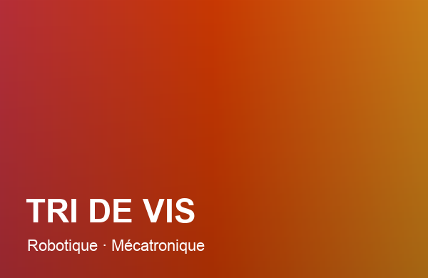

Tri Automatique de Vis
Projet Technique de 4ᵉ année à l'Icam : la conception d'un système capable de trier automatiquement des vis selon leur type. Un projet pluridisciplinaire — mécanique, électronique, embarqué et Python — que j'ai mené en tant que chef de projet.

Le tri manuel de visserie est répétitif et chronophage. L'objectif : automatiser la reconnaissance et la séparation de vis de types différents, en concevant un système complet, fiable et reproductible, dans le cadre du Projet Technique de 4ᵉ année.
Conception CAO de la structure et des mécanismes d'acheminement et de séparation des vis. Choix des actionneurs, dimensionnement et intégration de l'ensemble pour un fonctionnement continu.
Conception de la partie électronique (capteurs, pilotage des actionneurs) et programmation embarquée pour orchestrer le cycle de tri en temps réel.
Développement en Python de la logique de tri et de l'interface de contrôle. Tests, réglages et itérations jusqu'à obtenir un tri fiable.
En tant que chef de projet : planification, répartition des tâches, gestion des imprévus techniques et arbitrages de conception pour tenir les objectifs dans les délais.